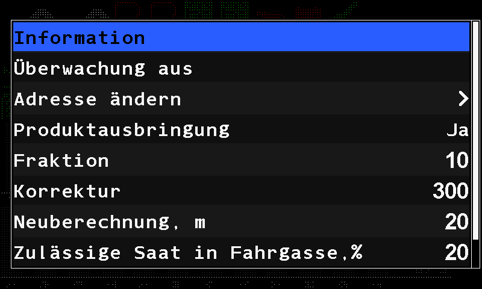
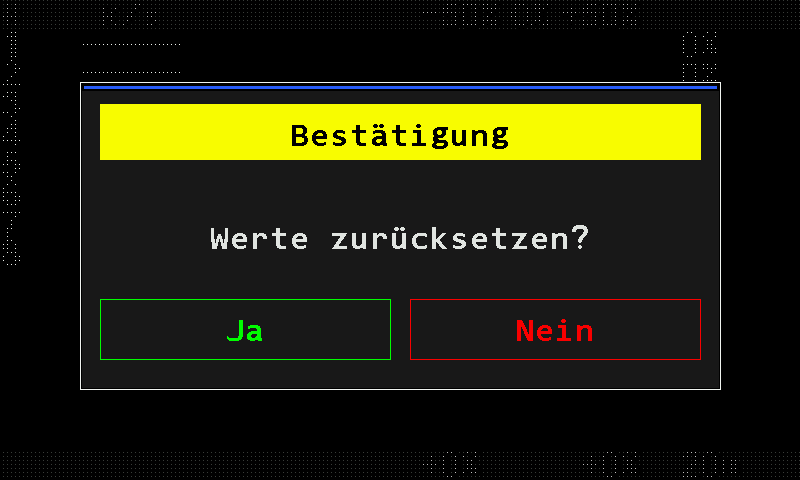

Menüs, Kontextmenüs, Ziffernblock und Fenster
Die fünf Dinge, über die am Panel alles geschieht — Arbeitsbildschirme, Hauptmenü, Kontextmenü eines Geräts, Ziffernblock und die Fenster, die fragen oder etwas mitteilen.
Alles am Panel geschieht über fünf Dinge: die Arbeitsbildschirme, das Hauptmenü, das Kontextmenü eines Geräts, den Ziffernblock und die Fenster, die etwas fragen oder etwas mitteilen. Die Arbeitsbildschirme haben ein eigenes Thema: Arbeitsbildschirme.
Das Hauptmenü
Drücken Sie auf dem Startbildschirm „MENU“ oder tippen Sie mit zwei Fingern auf den Bildschirm. Das Hauptmenü öffnet sich über dem Startbildschirm.

- Gewählter Punkt. Schwarze Schrift auf hellblauem Band. „UP“ und „DOWN“ bewegen das Band; „MENU“ öffnet den Punkt. Hier „Scheiben mit Korn füllen“ — siehe Scheiben füllen.
- „Einstellungen“. Die Einstellungen des Systems und der Maschine. Siehe Das Menü Einstellungen.
- Pfeilspitze. Der Punkt öffnet ein weiteres Menü.
- „Service“. Punkte für Inbetriebnahme und Service. Siehe Servicemenü.
- „Information“. Öffnet den Bildschirm mit den Informationen über das System.
In jedem Menü lesen Sie einen Punkt an dem, was rechts von ihm steht:
| Was Sie rechts sehen | Was es bedeutet |
|---|---|
| Eine Pfeilspitze | Der Punkt öffnet ein weiteres Menü. Drücken Sie „MENU“. |
| Ein Wert zwischen - und + | Ändern Sie ihn mit „PLUS“ und „MINUS“, gleich dort in der Liste. |
| Ein Wert zwischen -[** und **]+ | „PLUS“ oder „MINUS“ öffnet den Ziffernblock. |
| Nichts | Der Punkt führt eine Aktion aus. Drücken Sie „MENU“. |

„BACK“ verlässt ein Menü und führt eine Ebene nach oben.
Das Kontextmenü eines Geräts
Jeder Sensor, jeder Motor und jede Anzeige auf dem Startbildschirm hat ein eigenes Menü. Berühren und halten Sie das Gerät — sein Symbol oder seine Säule im Diagramm —, und sein Kontextmenü öffnet sich. Auf dem Bildschirm Motoren und auf dem zweiten Startbildschirm funktioniert dasselbe bei einer Motorkachel.

Der erste Punkt, „Information“, öffnet den Statusbildschirm des Geräts. Der zweite schaltet seine Überwachung um: „Überwachung aus“ oder „Überwachung ein“ — siehe Sensor in die Überwachung nehmen oder herausnehmen. Darunter stehen die Parameter; welche Sie sehen, hängt von der Zugriffsebene ab (Zugriffsebenen).
Zahlen eingeben
Steht ein Wert zwischen eckigen Klammern, öffnet das Ändern den Ziffernblock.

- Name des Parameters. Hier „Breite, cm“.
- Wert. Was Sie bisher eingegeben haben.
- Rücktaste. Löscht die letzte Ziffer. Berühren und halten Sie sie, um den ganzen Wert zu löschen.
- Ziffern. 1 bis 9 und 0.
- Dezimalpunkt und Minus. Eine Berührung fügt den Punkt ein; Berühren und Halten schaltet das Minuszeichen um, wo ein negativer Wert erlaubt ist.
- Null.
- „OK“. Übernimmt den Wert. „MENU“ bewirkt dasselbe.
Ein Wert außerhalb des zulässigen Bereichs wird nicht wie eingegeben übernommen: Das Panel setzt stattdessen die nächstgelegene Grenze.
Fenster, die fragen, und Fenster, die mitteilen
Jedes Fenster hat dieselbe Form: ein Kasten in der Bildschirmmitte, ein farbiger Streifen an seinem oberen Rand mit einem Wort darin, darunter die Meldung und — falls vorhanden — unten die Tasten. Lesen Sie zuerst den Streifen:
| Streifen | Was für ein Fenster | Wie es sich schließt |
|---|---|---|
| Gelb, „Bestätigung“ | Das Panel fragt. Es geschieht nichts, bis Sie antworten. | Berühren Sie „Ja“ (grün) oder „Nein“ (rot). „PLUS“ antwortet mit Ja, „MINUS“ mit Nein, „BACK“ bricht ab. |
| Blau, „Information“ | Das Panel teilt mit, was geschehen ist. | Manche schließen sich von selbst; andere schließen mit einer Berührung, „PLUS“ oder „BACK“. |
| Rot, „ALARM!“ | Ein Alarm. | Siehe unten. |

Das folgende Informationsfenster schließt sich von selbst.

Alarmfenster
Ein Alarmfenster sagt, was geschehen ist, an welcher Art von Gerät und an welchen Geräten — ihre Nummern werden aufgeführt, wenn mehrere gleiche Sensoren dieselbe Störung gleichzeitig melden. Solange es offen ist, piept das Panel.
| Was Sie tun | Was geschieht |
|---|---|
| „Schließen“ im Fenster berühren oder „HOME“ drücken | Dieser Alarm schließt sich. Der nächste in der Warteschlange erscheint. |
| „HOME“ gedrückt halten | Das Fenster schließt sich, und das Panel kehrt zum Startbildschirm zurück. |
Die übrigen sechs Tasten sind dunkel und bewirken nichts, solange ein Alarmfenster offen ist.
Ihre Maschine tut etwas, das diese Seite nicht beantwortet? Schreiben Sie an support@agriwelt.com — es antwortet ein Ingenieur.